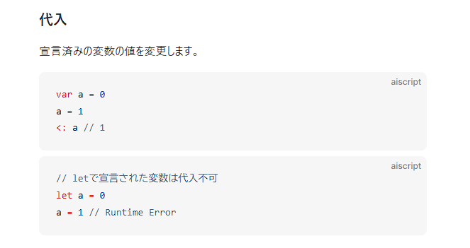
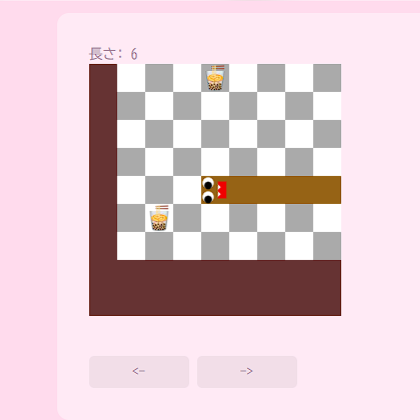
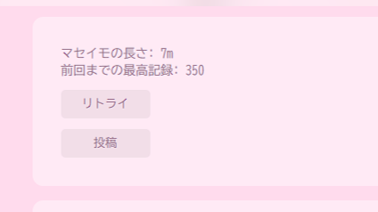

Misskey Play
プラットフォーム紹介
SNS「Misskey」において使用するため独自に作られたAiScript(リファレンス)という言語を使用しています。
SNSのユーザはこの言語で作られたミニゲームをSNS上で公開し、SNSの機能として他ユーザに遊んでもらうことができます。
JavaScriptをベースとした言語ではありますが、独自の言語のため開発の際には必ずドキュメントを読む必要があります。
関数型プログラミングが基本で、Flutterに近いようなコードによるUI設計を行います。
このプラットフォームを利用し、40個ほどのミニゲームをリリース・運用しました。

作品例
スリザリオから着想を得たゲームです。(作品リンク)
キャラクターを左右に操作して、壁や自分自身の体を避けます。エサを取ると長くなり、できるだけ長くなるようにすることがユーザの目的です。

MisskeyPlayでは投稿ボタンを埋め込むことができ、結果を直接投稿できるようになっています。

開発面では、高度な機能は用意されていないため、マップ表示やゲーム進行は自力で管理する必要があります。
作品一覧
リンクを別タブで開くとプレイできます。